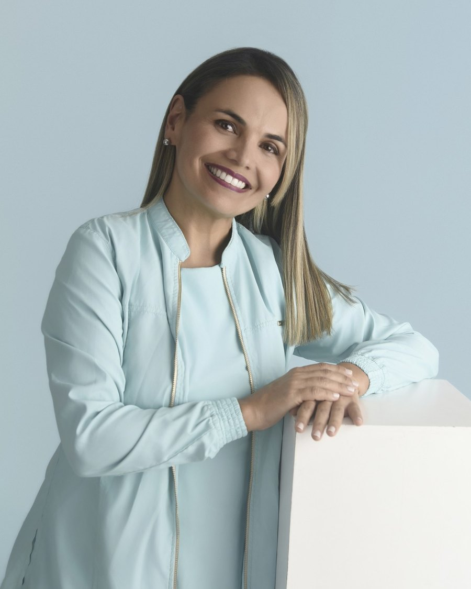

Especialista en Rehabilitación Oral y miembro activo de la Asociación Colombiana de Prostodoncia. Combina la excelencia clínica con una profunda vocación de servicio. Más de 15 años atendiendo casos de alta complejidad en Bucaramanga.

La Dra. Sonia Nieto es Especialista en Rehabilitación Oral y miembro activo de la Asociación Colombiana de Prostodoncia. Su trayectoria garantiza una atención personalizada, donde el rigor científico y la calidez humana se unen para restaurar la salud de cada paciente.
Su consultorio en Bucaramanga aplica los principios de la Odontología Biomimética: una corriente moderna que busca imitar la estructura natural del diente, preservando al máximo el tejido sano y restaurando la función con técnicas mínimamente invasivas.
Más de 15 años de experiencia y más de 2.500 pacientes satisfechos respaldan cada tratamiento. La calificación 5.0 con 35 reseñas en Google es la confirmación directa de quienes ya pasaron por su consultorio.
Su comodidad y bienestar son nuestra prioridad. Cada paso del tratamiento se explica antes de hacerlo, sin sorpresas y con tiempo para resolver dudas.
Tratamientos respaldados por la ciencia. La biomimética y el uso de materiales premium permiten restauraciones que duran décadas y se sienten naturales.
Cada sonrisa es única. Diseñamos un plan específico según su anatomía, expectativas, tiempos y presupuesto. No hay tratamientos genéricos.
Respetamos la biología natural de sus dientes. Conservamos la mayor cantidad de tejido sano y restauramos imitando la estructura original.
Diagnóstico preciso, planeación exacta y resultados predecibles gracias a escáner intraoral, magnificación y herramientas digitales de última generación.
Plan de cuotas mensuales con aprobación rápida. Su tratamiento no espera por el factor económico.
Pida una valoración inicial sin compromiso. La atendemos en la Carrera 33 # 48-30, Consultorio 308, Bucaramanga.